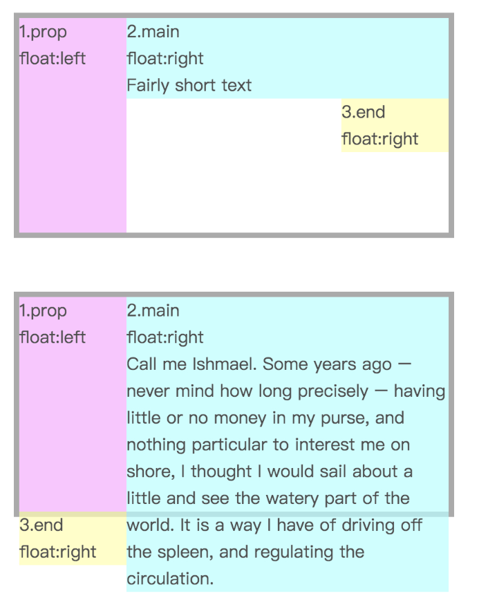
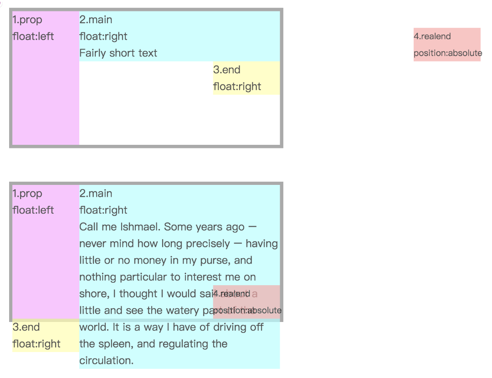

单行文本截断 单行文本截断单行文本截断单行文本截断单行文本截断单行文本截断单行文本截断单行文本截断单行文本截断单行文本截断单行文本截断 单行文本截断单行文本截断单行文本截断单行文本截断单行文本截断单行文本截断单行文本截断单行文本截断单行文本截断单行文本截断 单行文本截断单行文本截断单行文本截断单行文本截断单行文本截断单行文本截断单行文本截断单行文本截断单行文本截断单行文本截断
webkit浏览器多行文本截断 webkit浏览器多行文本截断webkit浏览器多行文本截断webkit浏览器多行文本截断webkit浏览器多行文本截断 webkit浏览器多行文本截断webkit浏览器多行文本截断webkit浏览器多行文本截断webkit浏览器多行文本截断 webkit浏览器多行文本截断webkit浏览器多行文本截断webkit浏览器多行文本截断webkit浏览器多行文本截断
使用浮动制作多行文本截断 使用浮动制作多行文本截断使用浮动制作多行文本截断使用浮动制作多行文本截断使用浮动制作多行文本截断使用浮动制作多行文本截断 使用浮动制作多行文本截断使用浮动制作多行文本截断使用浮动制作多行文本截断使用浮动制作多行文本截断使用浮动制作多行文本截断 使用浮动制作多行文本截断使用浮动制作多行文本截断使用浮动制作多行文本截断使用浮动制作多行文本截断使用浮动制作多行文本截断
2.main内容不同高度时3.end的位置
使用相对定位(图中错写成了绝对定位)后在上述两种情况下3.end的位置(图中4.realend的位置)，实际应用中可用伪元素代替1.prop和3.end
